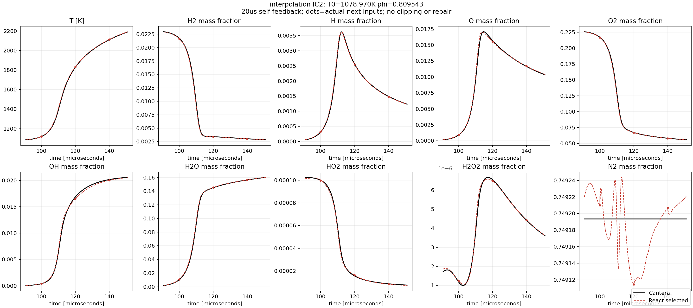
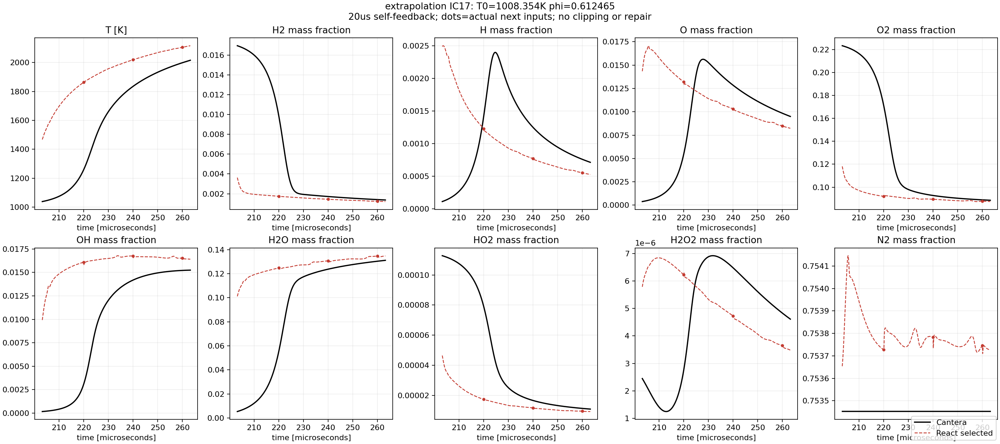

2026-11-16 · 단일 seed11 · 새 독립 보간16+외삽16조건 · 물리 보정 없음 · 추가 학습0회
문헌의 20 μs 반복 예측 방식으로 작동하는 사례를 확인했다. 문헌 성능의 완전한 재현은 아직 아니다. 검증 선택 모델은 32조건 모두 실제 경계 상태 검사에서 완주했지만, 전체 9변수 정확도는 보간14/16·외삽5/16이었다. 초기 구간과 조밀한 곡선의 상태 유효성까지 모두 요구하면 총6/32조건이 통과했다. 2 μs 결과는 훨씬 나빴다.
현재 대표 상태 → React-DeepONet(현재 상태, 20 μs, 당량비) → 예측 다음 상태
↑_________________________________________________________|
매번 방금 예측한 끝점을 다음 입력으로 사용한다. Cantera 정답은 되먹이지 않는다.
Kumar–Echekki의 React-DeepONet(Fuel 2024)과 Kumar 학위논문3장을 기준으로 이전에 독립 구현·학습한 가중치를 사용했다. 대표 T/H₂/H/O₂/H₂O 다섯 변수를 되먹이고, 나머지는 같은 대표 예측값에서 복원 ANN으로 계산했다. 50회 ×20 μs=1 ms가 문헌 조건이며, 기존 ANN과 연결되는 500회 ×2 μs=1 ms는 별도 평가다. 매번 원래 초기값을 넣는 전역 flexDeepONet과는 다른 실행이다.
이전 평가는 창 내부의0.1 μs 보조 질의까지 모두 검사해 음수가 하나라도 있으면 실패로 처리했다. 이번에는 실제 다음 입력에 사용한 끝점의 유효성과, 보조 곡선 전체의 유효성을 구분했다. 음수를 잘라내거나 허용 기준을 바꾸지 않았다. 실제 경계가 잘못되면 raw 완주 실패로 기록하고 전체기간 raw 점수를 주지 않는다.
선택 모델의 실제20 μs 끝점은32조건 모두 유효했지만, 보조 곡선이 모든 시각에서 유효한 것은18/32조건이었다. 보조 질의의 최저 질량분율은 −4.43×10⁻¹²였다. 이 음수도 그대로 기록했다. 이것은 가중치가 새로 개선된 결과가 아니라, 서로 다른 평가 대상을 분리한 결과다.
선택 모델은 새 보간16조건 모두에서 대표5변수의 전체1 ms와 초기0.1 ms 정확도 기준을 통과했다. 이 수는 실제20 μs 경계와0.1 μs 조밀 곡선에서 각각16/16으로 확인했다. 원래 초기값을 반복 넣은 전역 예측이 아니라 예측 끝점을 되먹인 결과다. 외삽에서는 대표5변수 전체·초기 동시 통과가8/16이었다. 대표5변수 정확도 통과만으로 복원된 전체 화학종 또는 모든 보조 질의의 물리 유효성까지 통과했다고 주장하지 않는다.
보간16조건에서 대표5변수 정규화 MAE의 평균은0.001164였다. 이는5제곱근/min-max 좌표에서 계산한 평균 절대 차이다. 원문 MAE 집계의 정확한 동일성이 확인되지 않았으므로 수치가 가까워 보여도 원문0.1%의 정확한 복제로 주장하지 않는다.
아래 '경계'는 실제 되먹임에 사용한 값, '조밀'은 각 창 안을0.1 μs로 추가 질의한 곡선이다. 완주는 유한값·비음수 질량분율·온도200–6000 K를 실제 경계에서 만족한 경우다. 정확한 질량·원소·엔탈피 보존까지 보장하는 뜻은 아니다. joint9는 T+8반응종 각 NRMSE≤0.1이며 N₂/AR은 별도다. NRMSE=RMSE(Cantera,NN)/RMS(Cantera), 무차원 비율이다.
| 가중치 | 간격 μs | 영역 | 조건 수 | 경계 raw 완주 | 경계 전체 joint9 | 경계 전체+초기 joint9 | raw 완주+조밀 전체/초기 joint9 | 조밀 전 시각 상태 유효 |
|---|---|---|---|---|---|---|---|---|
| selected | 20 | interpolation | 16 | 16 | 14 | 7 | 10 | 11 |
| selected | 20 | extrapolation | 16 | 16 | 5 | 2 | 2 | 7 |
| selected | 2 | interpolation | 16 | 16 | 2 | 2 | 2 | 11 |
| selected | 2 | extrapolation | 16 | 16 | 1 | 0 | 0 | 7 |
| protocol_final | 20 | interpolation | 16 | 0 | 0 | 0 | 0 | 0 |
| protocol_final | 20 | extrapolation | 16 | 2 | 0 | 0 | 0 | 0 |
| protocol_final | 2 | interpolation | 16 | 9 | 0 | 0 | 0 | 9 |
| protocol_final | 2 | extrapolation | 16 | 5 | 0 | 0 | 0 | 2 |
| stabilized | 20 | interpolation | 16 | 16 | 16 | 10 | 7 | 11 |
| stabilized | 20 | extrapolation | 16 | 16 | 6 | 2 | 4 | 6 |
| stabilized | 2 | interpolation | 16 | 16 | 9 | 7 | 7 | 11 |
| stabilized | 2 | extrapolation | 16 | 16 | 3 | 1 | 2 | 6 |
경계는 전체51점·초기6점, 조밀 곡선은 전체10,001점·초기1,001점으로 평가 시각과 가중치가 달라 통과 수가 다를 수 있다. 곡선의 전체기간 통과만으로 초기 점화가 정확하다고 말하지 않는다. 선택 모델은 전체·초기 조밀 곡선 정확도와 조밀 상태 유효성을 모두 만족한 조건이6개였다.
기존 검증12조건에서20 μs 경계의 raw joint9 수, 전체·초기 동시 통과 수, worst9 중앙값 순으로 선택했다. 선택은 사전학습72,500회 가중치였다. 모델과 새32조건을 고정한 뒤에만 이 테스트를 열었다. 새 테스트를 보고 가중치를 다시 고르지 않았다. 보간은 원래 학습 T₀1000–1200 K/당량비0.75–1.15 범위 안이며, 외삽은 그 밖이다.
protocol_final은 사전학습100,000회+K5 18,712회의 원래 마지막 가중치다. 이번에도20 μs에서32개 중2개만 완주했고 정확도 통과는0개였다. stabilized는 원래100,000회에서 LR/100 K5 500회 후의 선택 가중치로, 사전 지정 대조군이다. 보간에서16/16 전체 joint9를 만족했지만 초기 구간까지 포함하면10/16으로 줄었다. 이것을 테스트에서 새로 고른 최적 모델로 제시하지 않는다.
아래 좋은 사례는6개 엄격 통과 조건 중 번호가 가장 앞선 IC2를 설명용으로 골랐다. 가중치 선택에는 사용하지 않았다. 한 사례를 전체32조건의 성공으로 확대하지 않는다. 검정=Cantera, 빨강=선택 모델, 빨간 점=실제 다음 입력으로 사용한20 μs 끝점, 선=그 사이의 보조 질의다.

아래 IC17은 선택 모델의 경계 전체 worst9가 가장 큰 외삽 조건이다(T₀1008.35 K, 당량비0.61247, worst9≈0.798). 완주는 했지만 정확하지 않다.

문헌처럼 예측값을 반복 입력하는0D 솔버의 부분 실증은 확인했다. 그러나 전 범위의 정확도, 초기 구간,2 μs 사용, K5 최종 가중치의 성능까지 문헌 수준으로 재현한 것은 아니다. K5 전환의 gradient 증가와 큰 LR에서의 급락은 이전 통제에서 확인된 문제다. 비공개 ParamNet 융합 구현과 정확한20반응 기구 파일을 확보하지 못한 차이도 남는다. 이번에 사용한 공개 Burke 축소본은10종·25 Cantera 반응 항목이다. 저자 코드·가중치의 정확한 복제라고 부르지 않는다.
이번 평가에는 추가 학습이 없었다. 원래 학습은 시간상한 종료였으며 평탄 종료가 아니다. 실제 되먹임·음수 끝점 실패·내부 질의 분리·NRMSE 의미를 검사한4개 테스트와 작은 전체 파이프라인 검증을 통과했다. 본 평가의7,680건 NRMSE 재계산과 연결 파일 해시도 통과했다. 이 소프트웨어 검증과 화학 정확도 통과는 구분한다.
20 μs 전체32조건 PDF · 20 μs 점화 확대32조건 PDF · 2 μs 전체32조건 PDF · 변수별 NRMSE CSV · 조건별 결과/정규화 MAE/질량합 오차 · 집계표 · 동결 선택 근거 · NRMSE 검증 · 이번 정리 JSON
React-DeepONet 원 논문 · 공개 원문의 되먹임 절차 · 상세 학위논문3장 · 보존한 전역 flexDeepONet 결과